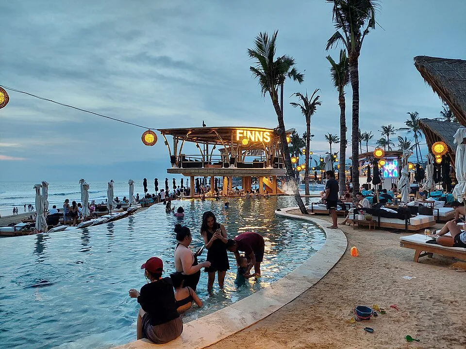

E33G要同时看年收入和银行资金
印尼移民局Bontang的现行E33G分类页，要求与境外成立的公司签有工作合同，并用银行材料证明薪资或收入每年至少60,000美元。另有一项生活资金证明：近三个月的银行对账单，金额至少2,000美元或等值货币。E33G官方条款
两项材料可以涉及同一账户，但证明的事情不同：入账与合同说明收入和工作关系，资金及余额记录说明可用生活资金。仅有存款，不能替代境外公司合同；能线上接单，也不等于所有自由职业者都自动适用E33G。
年收入72,000美元，现有余额2,400美元
假设你能证明年收入72,000美元，账户此刻有2,400美元。前一个数用于对照年收入门槛，后一个只是当前资金的截面。仍需准备近三个月完整对账单，不能把一张余额截图当成全部资金材料。
官方英文手册写的是近三个月银行对账单及最低2,000美元余额。这里没有进一步定义“每月月末余额”或“日均余额”，本文也不把2,000乘三变成6,000美元要求。突然转入一笔钱，能否满足审查，要看真实账户记录及受理方要求。手册是2024版，本次从当前官方网址重新读取，与现行分类页交叉使用。


韩国正式F-1-D，先找自己的GNI档位
韩国F-1-D自2026年6月30日正式实施，面向外籍人士及其家属。主申请人须年满18岁，隶属海外企业、可远程工作，并在同一行业工作至少一年。收入标准按申请日韩国银行公布的上年人均国民总收入（GNI），结合年龄和居住地区确定。法务部正式制度附表
| 不携家属的申请人 | 首都圈，排除人口减少／关注地区 | 非首都圈及人口减少／关注地区 |
|---|---|---|
| 18—34岁 | 1.5倍GNI | 1倍GNI |
| 35岁及以上 | 2倍GNI | 1.5倍GNI |
携配偶或未成年子女时，首都圈不分年龄按2倍，非首都圈及人口减少／关注地区按1.5倍。附表用2025年GNI给出的年收入近似例值为：1倍约5,241万韩元，1.5倍约7,862万，2倍约10,483万。它们是官方示例，不能当作以后每年的固定金额。
同样8,000万韩元年收入，家属会改变比较结果
再假设申请人30岁、年收入8,000万韩元，独自住在首都圈非人口减少／关注地区。按上面的2025年示例，数值超过1.5倍档的约7,862万；若携配偶或未成年子女，改按约10,483万的2倍档比较。银行存款增加，不能直接替代这项年收入证明。
正式附表列在职证明、工资单和账户交易明细等收入材料，携家属另附关系证明。若按非首都圈或人口减少／关注地区档位申请，还列有一个月以上租约、指定工作度假设施或住宿预约确认等居住证据。本文未把银行资料一律解释为余额门槛，也未因附表没列统一最低余额就认定无需银行材料。示例只比较数字，不代表个案获批。
一亿韩元保额，不是一亿韩元存款
F-1-D要求停留期间的个人医疗保险，医院治疗与送返回国的保额至少一亿韩元。应核的是保单保障范围、保额和有效期，提交投保证明；一亿是保障金额，实际保费另看报价，不是必须往银行存一亿。
真正出发时的房租、押金与日常花费仍另做预算。E33G的年收入和银行资金要求，不能相加成一笔应缴费用；韩国GNI门槛除十二，得到的仍是收入标准的月度折算，不代表一月生活费。住宿可再看苍古、乌布和首尔月住指南；韩国完整资格另见F-1-D正式制度说明。
来源与阅读范围
作者：Roamorrow 编辑部。本文链接不收取返佣。费用按文中条件演算，具体日期的账单与使用条件另确认。
查看价格与规则出处
- 印度尼西亚移民局Bontang：E33G现行分类与材料 · 资料核对 2026-10-27
本专题重新打开官方分类页，逐读E33G全部段落（申请、特别要求、费用与法律边界）；普通公开HTTP取得正文。其他签证不引用。 不把2000USD当月收入、乘3的总存款或签证费；具体账户名义人适用、税前税后及收入组成未作个人判断。
- 印度尼西亚移民总局：E33G Official Guidebook（2024版） · 资料核对 2026-10-27
本专题普通公开HTTP重新取得4页原PDF并读全文文字层；第3页Document Requirements写近3个月statement、minimum balance USD2000、annual fixed income/min salary60000及境外公司合同。 未逐张渲染PDF图像；相关文字不依赖图表列对应。未据近3个月措辞推每月最低、平均或仅某日余额规则。
- 韩国法务部：2026年正式F-1-D制度及第3页附表 · 资料核对 2026-10-27
本专题重新打开官方3页PDF并经HTTP取回，字节SHA与此前已渲染原PDF相同；全文文字层及第3页真实渲染的年龄/地区表、家属与保险条款实际查看。 不把近似例值独立重新精算成新门槛；不推所有自由职业者适用、固定存款免银行材料或个人获批结论。
仓古（巴厘岛）城市页 · 乌布（巴厘岛）城市页 · 首尔城市页 · 印度尼西亚目的地 · 韩国目的地